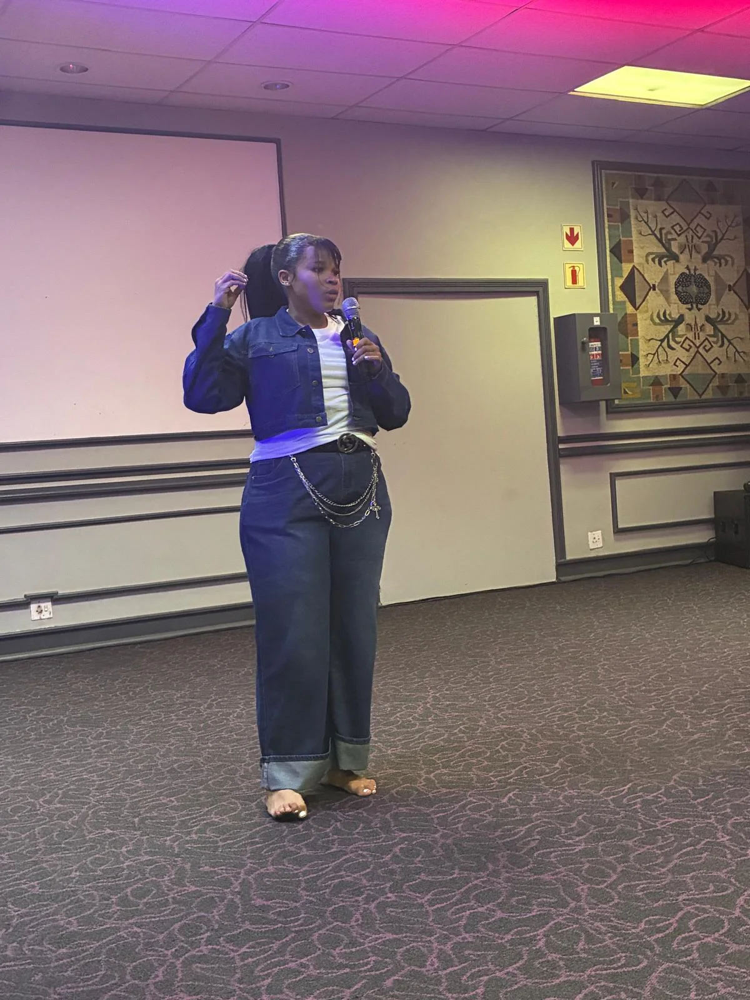

PUO01 / STORIES
Oral storytelling
Bring elders and learners together to record oral stories and local knowledge. The draft proposes two stories per school each month, with six stories per school by April.
Language · Elders · MemoryAfrica Day · Schools Edition
A proposed school and community programme designed to build cultural pride through language, storytelling, practical learning and intergenerational exchange.

The Schools Edition aims to celebrate cultural diversity and preserve culture while nurturing pride among younger generations.
Through schools and institutions of higher learning, the project proposes to connect learners with elders and local knowledge. Its activities bring together oral storytelling, language, music, gardens, seed libraries and seed banks, podcasts, cultural-sport activities and digital archiving.
The ambition is to create a legacy that can continue beyond the Lesotho @60 celebrations, with community knowledge recorded and shared in ways that respect the people and cultures from which it comes.
The project plan also identifies 300 families as a proposed beneficiary group. All beneficiary figures are planning targets, not confirmed participation or achieved results.
Five programme pillars
The first four pillars have activity descriptions in the supplied draft. The fifth pillar, MINO, is named but its specific Schools Edition activities have not yet been defined.
Bring elders and learners together to record oral stories and local knowledge. The draft proposes two stories per school each month, with six stories per school by April.
Language · Elders · MemoryEstablish school gardens, develop seed libraries and seed banks, and use weekly measurement logs to connect practical growing with mathematics and science.
Seeds · Agriculture · STEAMSupport learners to produce podcasts from cultural stories and local knowledge. The draft proposes three to four podcasts per school during March and April.
Audio · Digital skills · StoriesUse internal Bambatha cultural-sport games to create a platform for youth participation, teamwork and community connection during April.
Youth · Sport · CommunityMINO is listed as the fifth pillar in the draft plan, but its activities, intended outcomes and delivery schedule have not yet been supplied.
Details to be confirmedThe learning experience
The Schools Edition connects cultural knowledge with practical learning, creativity and intergenerational exchange. It is designed to give learners meaningful ways to explore and carry their heritage forward.
Build pride in African and Basotho identity through language, oral histories, elders’ knowledge and local storytelling.
Connect gardens, seed heritage and observation with practical learning in mathematics, science and agriculture.
Give learners opportunities to shape stories into podcasts and take part in cultural and sporting activities.
The beneficiary figures are planning targets: 30 schools, 60 elders, 300 learners directly, 300 families and more than 3,000 indirect beneficiaries. They are not confirmed participation or achieved results.
A shared responsibility
The proposed model depends on collaboration between participating schools, elders and community leadership, education institutions, cultural practitioners and delivery partners.
Work with elders and communities to identify stories and knowledge that can be shared, with appropriate consent and attribution.
Use storytelling, podcasts and school gardens to connect cultural knowledge with practical learning and digital skills.